New slide
+ New slide in the slide list's header, Ctrl+M, or a right-click on the list › New slide adds a blank slide after the selected one, its title ready to type. One undo step.
The guide: what the program does, every function it has, and how it works underneath.
A workbook on the shared folder becomes a deck of slides that follow its numbers.
Slide Builder turns tables in an Excel workbook into a deck of 16:9 slides. The workbook stays on the shared folder; Slide Builder reads it and draws the slides from its numbers. When the workbook changes, the slides change with it.
Five designs. Glass (Liquid Glass) redraws each table as translucent glass cards, capsules and fine lines over a coloured background. Excel draws the table exactly as the workbook formats it; Refined (Excel Refined) like Excel in one polished style. Navy and Red (Consulting Navy, Consulting Red) draw each table as a data exhibit with trend lines and bars, under a headline of key figures. One click switches; each design keeps its own table sizes. Text boxes, comments, charts and shapes show in every design.
Many people at once. Everybody opens the same workbook from the shared folder and edits the same deck. Other people's changes appear on your screen within 1–2 seconds. Nothing is checked out or locked.
The workbook is never touched. Everything you change – a bold cell, a text box, a colour – is stored
beside the workbook, in the folder backend\data\. The Excel file itself is never written.
Exports. PDF with real text and lines, PDF made of pictures, PowerPoint files with editable text and real tables and charts, PNG pictures, and a copy of the slide. Several versions and designs – or one file for each value of an input cell – can be exported in one go.
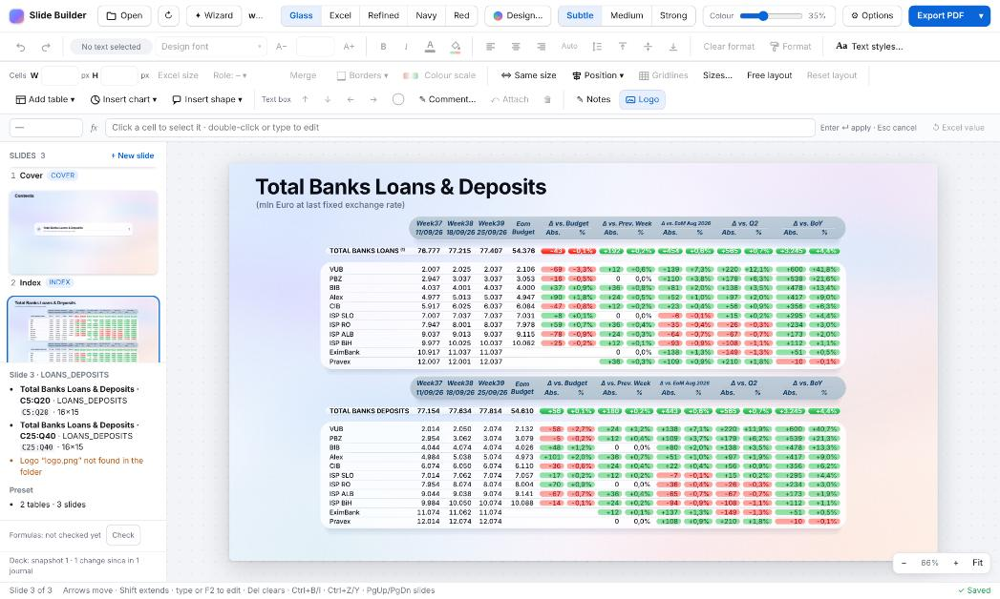
1234567891011121314151617181920The shared folder, starting Slide Builder, opening a workbook, and the wizard's four steps.
All workbooks live in one shared folder, for example T:\Slide Builder\. Its parts:
| In the folder | What it is |
|---|---|
Start Slide Builder.bat | starts Slide Builder on your PC (or use the desktop shortcut) |
Install Slide Builder.bat | the first-time set-up on a PC: checks Python and the folder, makes the desktop shortcut, runs a self-test; nothing is downloaded, no administrator rights needed |
Update Slide Builder.bat | for the maintainer: installs a new version for everybody (part 9); it runs tools\update.py |
Start Slide Builder (v3).bat | while it exists: Slide Builder 3 on the same data (part 9) |
your .xlsx .xlsm .xlsb (.xls) files | the workbooks: read, never changed |
export\ | where PDFs, PowerPoint files and pictures are saved; export\feedback\ holds problem reports |
app\<version>\ | the program, one folder per installed version, with its licences (THIRD-PARTY-NOTICES.txt); app\current.json says which one runs |
backend\data\ | everything people changed: the decks, shared settings, personal preferences, fonts, logos, backups |
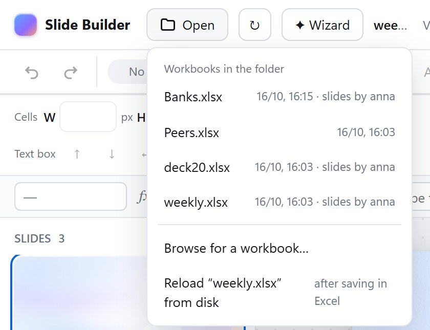
Double-click the desktop shortcut, or Start Slide Builder.bat. A black console window opens: keep it
open – it is the small program that reads and saves files for you, the helper (if it cannot start, it says to run
Install Slide Builder.bat first). Slide Builder then opens in
its own Edge window, without tabs or address bar, and reopens the last workbook you used – unless you already opened one
in the first moments. Starting it a second time opens the one already running (the helper uses port 8765, or the next free one up to
8784). Before a workbook is open, the start screen offers Open and Licences….
Open lists the workbooks of the folder, newest first, with the time they were saved and "slides by <name>" – the last person who changed that deck ("No .xlsx files next to the app" when there are none). Browse for a workbook… picks a file elsewhere; you can also drop a file anywhere on the window. A file that is not in the folder is handed to the helper and its name says "· not in the folder" ("· preview only" if that fails); the same file as one of the folder opens as that one. Reload "…" from disk (and ↻) reads the workbook again after it was saved in Excel.
.xlsx, .xlsm and .xlsb are read directly, without Excel; a large one shows a progress bar
while it is read. An old
.xls, or a protected file the page cannot read, is converted by the PC's Excel first ("… was converted
by Excel for reading – the original file is unchanged"). A file encrypted with a password or a sensitivity label
cannot be read, and Slide Builder says so. Hidden sheets are never shown.
A workbook opened for the first time starts the wizard. A workbook whose sheets are named "slide…" and carry "x" tables gets its deck made directly at start-up; the wizard stays available.
A workbook with a saved setup asks Saved preset found: Continue with preset, Open editing wizard, Cancel or – unless this window has that deck open already – Delete setup… – the workbook's whole setup (tables, slides, design, versions, comments) is deleted for everybody and the wizard starts as for a new file. The workbook is not changed, and a backup is kept (part 9, Saved setups).
Four steps. The step buttons at the top go back and forth; ✕ or Esc asks before closing. Save preset & show slides saves the result – the deck's preset – in one change you can undo. If somebody else changed the slides while you were in the wizard, you are asked whether to discard yours or save yours anyway.
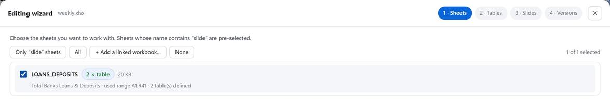
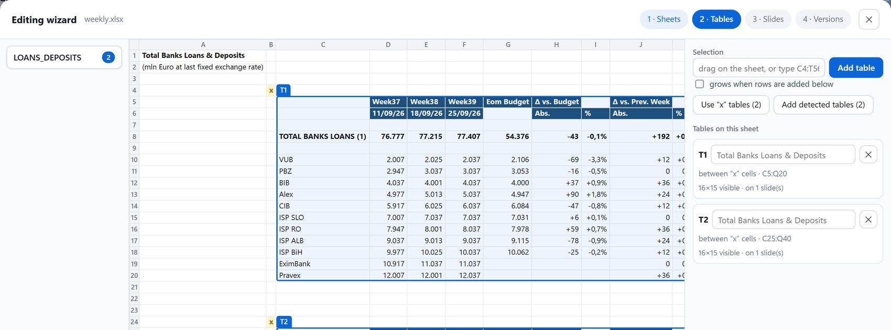
123 456 7C4:T56 and
press Add table. (5) grows when rows are added below keeps a range table
following new rows. (6) Use "x" tables takes the marked tables, Add detected
tables the dashed suggestions. (7) The list names each table, its range and size, the slides it is on, and warns about very
large ones; ✕ removes one. A click on a table in the sheet scrolls the list to it.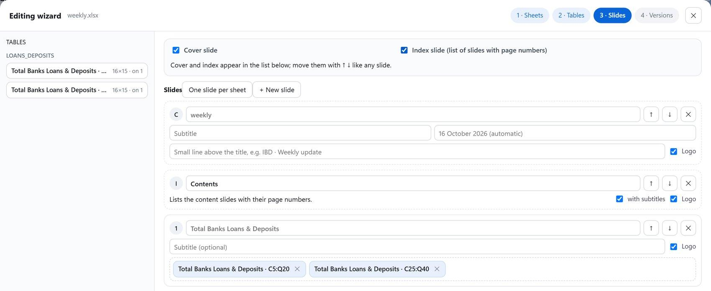
123 456 789 10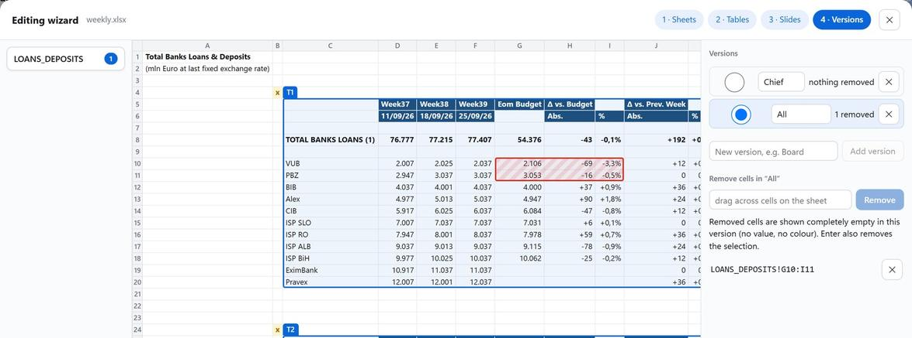
123 45x in the cell just above and to the left of a table's top-left corner, and
another just below and to the right of its bottom-right corner. Slide Builder finds the table between them; the marker
row and column are not part of it. The wizard's preview marks them with a yellow "x".The slide works like a sheet in Excel. Every change is stored beside the workbook, keyed by sheet and cell.
Click a cell, Shift+click or drag to select more – or arrows and Shift+arrows (hidden rows are skipped), Ctrl+A for the whole table. Type to replace the text, F2 or a double-click to edit it, Enter / Shift+Enter or Tab / Shift+Tab to move on, Esc to cancel, Del to clear. Ctrl+B and Ctrl+I set bold and italic. Pointing at a cell outlines it. A click on an empty part of the slide clears the selection.
+ New slide in the slide list's header, Ctrl+M, or a right-click on the list › New slide adds a blank slide after the selected one, its title ready to type. One undo step.
As in PowerPoint: right-click a slide › Hide slide hides it in the current design (Show slide brings it back); Hide in every design in all five. A hidden slide stays in the list – grayed, its number struck, marked HIDDEN – and on the stage ("Hidden in …"), where you can still edit it. It is left out of that design's exports: PDF, PNG of every slide, PowerPoint, every version × design, Run for each value. Page numbers and the index count only the slides shown. Exporting or copying the current slide still exports a hidden one. Hidden in Glass, a slide still shows in Navy. One undo step each.
Right-click a slide › Duplicate slide puts a copy right after it (the same tables, with the slide's texts, formats, charts, callouts, notes, free layout, looks and hidden designs) and shows it. Delete slide – or Delete on a slide selected in the list – asks first; its tables stay in the deck (Add table ▾ puts them back). The cover and the contents slide are not duplicated; a deck keeps at least one slide. One undo step each.
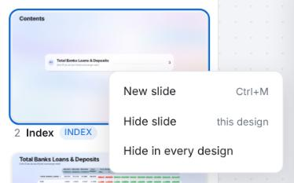
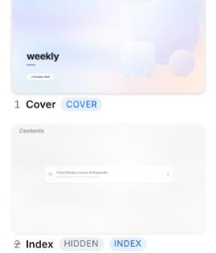
One toolbar formats any text: cells, a text box, the notes section, or the slide's title, subtitle, cover note and date. Click a title to select it, double-click to edit it on the slide (Enter keeps it, Esc cancels).
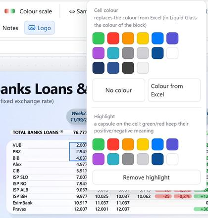
Replaces the fill from Excel: 16 colours, No colour, Colour from Excel. In Glass it becomes the colour of the block.
A capsule behind the value in Glass; green and red keep their positive / negative meaning. Remove highlight takes it away.
How Glass draws the selected cells: Auto (detected from the Excel formatting), Header, Total (a highlighted tile), Body, Note.
Joins the selected cells (the top-left value is kept) or splits merges, also those that come from Excel.
The selected cells' borders, as Excel's Borders menu: Bottom, Top, Left, Right, All borders, Outside, Thick outside, No border – in a style (thin, medium, thick, dashed, dotted, double) and a colour. Clear (as in Excel) brings the workbook's borders back. They change the slide only. Excel, Refined and the consulting designs' ruled tables draw them; Glass and the other consulting table styles draw no borders.
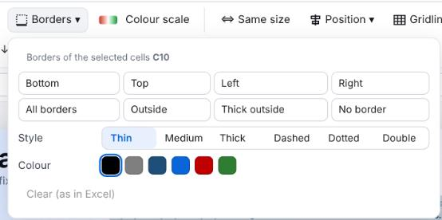
Format, then click or drag over cells to copy size, bold, italic, colours, cell colour, highlight, alignment and vertical alignment, number display, role, conditional formats, colour scales, and the gridlines and borders set on the slide (a date keeps its date format). A double-click keeps it on; Esc stops. Several at once (4.9): Ctrl+click or Ctrl+drag ranges of any table of the slide, then let go of Ctrl – all are painted, one undo step. With a chart, callout, icon or line selected it copies that object's look (never its data, text or place) onto others of its kind.
The name box shows the cell; type in the bar and press Enter (Esc cancels). ↺ Excel value goes back to the workbook's own text. A text you typed applies only while Excel's value stays what it was: if the figure changes in the workbook, your text pauses and the Issues panel says so.
On the text toolbar: Fewer decimals, More decimals, Percent (on / off), Thousands separator (on / off) change how the selected cells show their numbers, over Excel's format; Clear format goes back to it. Top / middle / bottom now place a cell's text too. Ctrl+click several ranges: the text toolbar changes them all.
Drawn in every design as Excel shows them: colour scales, data bars, icon sets, cell-value rules (greater than, less than, between), top / bottom, above / below average, duplicates, text, blanks, errors, dates and formula rules. In PowerPoint the bars and icons are shapes grouped with the real table. What is still not reproduced is named in the Issues panel.
Type W or H and press Enter, or drag a column or row border on the slide (a guide and a tip show the size); a double-click on the border gives the Excel size. "…" in W or H means the selection has several sizes.
Point at a table and its handles appear: (1) the grip with the table's name – drag it to move the table next to, above or below another; (2) the + buttons add a text box on that side; (3) the corner scales the table; (4) an edge stretches it (0.2–5 ×). Each drag is one change and one undo step.
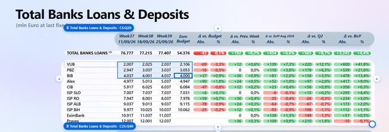
1234Position places the tables across the slide (left, centre, right) and up and down (top, middle, bottom). Gridlines sets the horizontal and vertical lines of the table – As in Excel, All or None – and, for the selected cells, light lines: H (above and below each cell), V (left and right), Outline (around the selection), in a colour and a weight (0.5–3 px); Clear removes them. They never change a border: where a design draws a border, the border shows.
Deeper green or red the bigger the number: across each row, down each column or over the whole selection; + green / − red or low red → high green; on the cell colour or the number colour; Reverse; with a preview. Apply to selection. The scales of a table are listed in the same menu and removed with ✕.
Pick slides and tables, then Make same size (width, height, as the largest, the smallest or the first), copy column widths and row heights from one table to others, align the tables of the chosen slides, or Reset to Excel sizes.
Lists the deck's tables – those on no slide first, each with a small sketch – and puts one on the current slide (on a free layout in the first empty spot). New table from cells… makes one from cells picked on a sheet. One undo step each.
Hide rows, Hide columns: the selected ones, on this slide only – the table closes up there and in every export; the workbook is not changed. A thin double mark shows the gap (a click unhides it), and Unhide all on this table. Totals stay Excel's ("Σ incl. hidden rows", on screen only); a chart of that table on the slide skips the hidden rows.
With a version chosen in the top bar: Delete rows, Delete columns – that version leaves them out and its tables close up; the full deck and other versions keep them –, Empty cells (as the wizard's Remove), Restore selection, Restore all of “…”. Wizard step 4 has Delete rows and Delete columns too (struck through on the sheet, ✕ restores). A table keeps at least one row and column. One undo step each.
Table sizes belong to the design they were made in: a table can be wide in Glass and narrow in Excel. The tables of a slide are fitted automatically – as large as possible, at most twice their Excel size.
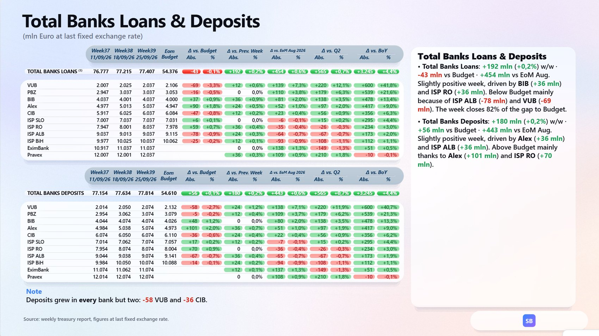
1234## Note, **every** and [[-58]], (3) the notes section, (4) the logo in its bubble.# Title, ## Heading, **bold**, [[+12,3]] (green or red by
its sign). Ctrl+Enter or a click elsewhere closes the box, Esc cancels. A new box closed empty disappears.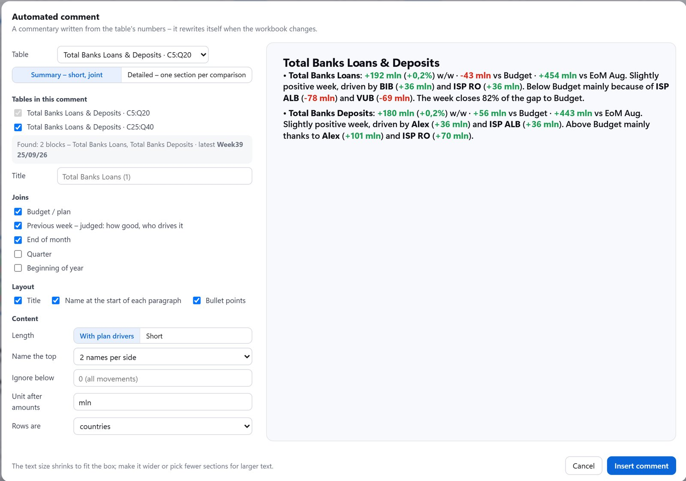
123 456 789A commentary written from the table's own numbers, like an analyst would. It is rewritten every time the slide is drawn, so it follows new figures, your edits and the version you look at.
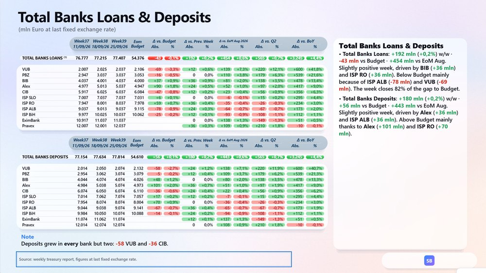
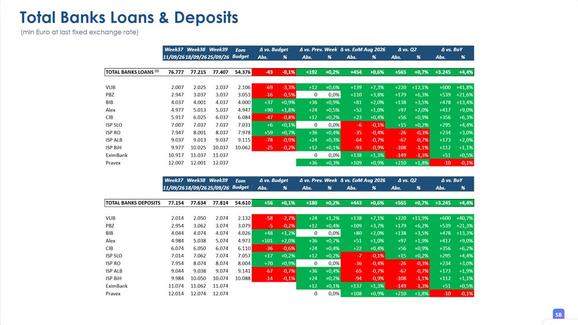
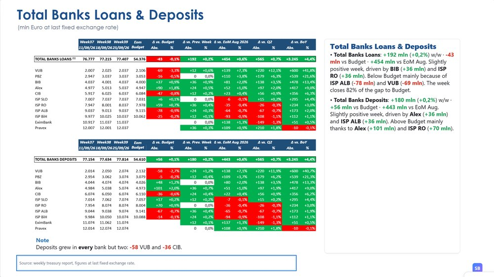
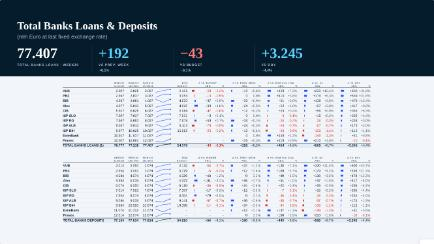
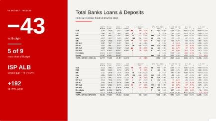
The design is chosen in the top bar and shared with everybody on the workbook. Title, logo, page number and footer stay in every design. Switching design shows the slides with that design's own table sizes. In Glass, Subtle / Medium / Strong sets the glass strength and Colour (0–100 %) how colourful the background is; moving the slider is one undo step.
In Navy and Red every number shown is a cell of the table – edits, versions and scenarios included. The look is set at the end of ribbon 2, in these two designs only. With nothing or a table selected: the table style (Exhibit, Cards, Ruled), All numbers or Compact, Δ bars, Trend, Latest bar. With the title, the KPI line or the message panel selected: the headline (KPI line, panel, none), how many KPIs (1–3), the ground (band, tint, white), and the KPI line's or panel's font, size, bold and colour from the text toolbar. A change applies to the current slide (a dot marks a part the slide sets itself); Apply to all makes it the deck's, Deck's brings the slide back to it. One undo step each.
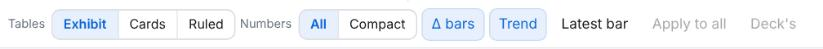
Excel and Refined follow the Intesa Sanpaolo template (4.7): the cover's blue band, the logo above the title (26 pt bold blue, the subtitle grey), the page number top right (on unless the deck turned it off; none on the cover), the logo bottom right, Century Gothic, the contents slide, tilted-square bullets (plain squares in PowerPoint), outlined boxes, the template's colours. Long titles shrink before they are cut. Glass, Navy and Red are unchanged.
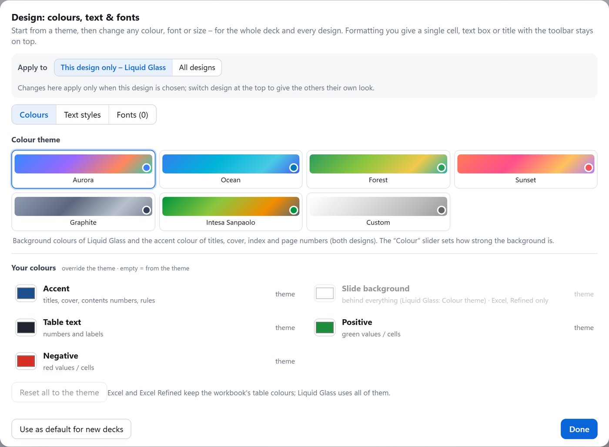
123 456 7Design… (the button with the theme's swatch) holds the deck's look.
Text styles. One row per kind of text, deck-wide: slide titles, subtitles and text boxes (font, size, bold, italic, colour, alignment; text boxes also line spacing), tables (the font), the contents list (font, size, colour), page numbers & footer (font, bold, italic, colour); Reset per row. A format given to a single cell, box or title stays on top. A larger title pushes the subtitle and tables down.
Fonts. The shared font library: add a Google font (fetched once by Slide Builder's helper into the folder, then available to everybody and in exports), suggestions, or upload your own files (.ttf .otf .woff .woff2; a variable font is stored as its fixed styles). If the office network refuses a download, the message says what to do. Previews come from a cache on the shared folder. The library lists each font with a sample, its styles and who added it, removes one after a question, and is refreshed about every 30 s.
Cover and index are made in wizard step 3. Double-click the cover's title, subtitle, note or date to edit them on the slide. The cover's date "automatic" is today's.
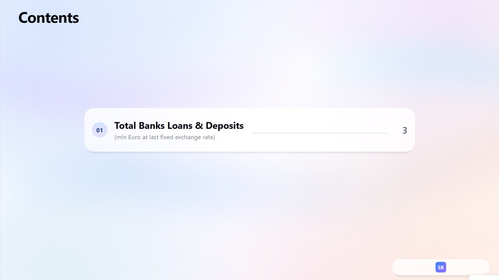
On the index slide the toolbar shows Subtitles, which shows or hides the slides' subtitles in the list. The slide list tags these slides COVER and INDEX.
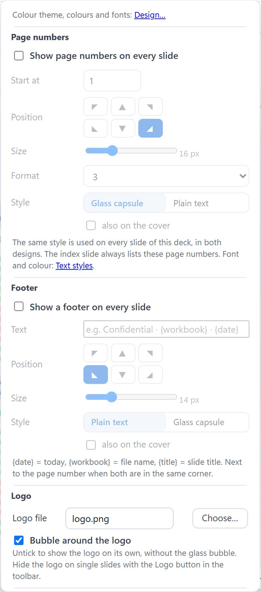
1234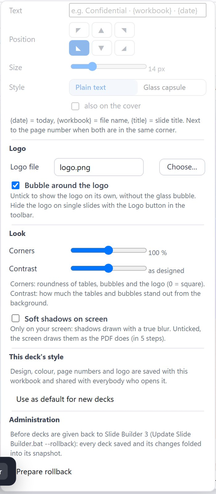
5678⚙ Options (greyed until a deck is open): (1) a link to Design…; (2) Page numbers (they count the slides shown in the design): on/off, start at, six
positions, size, format (3, 3 / 12, Page 3, p. 3), glass capsule or plain text, also on the cover. (3)
Footer: a text with {date}, {workbook}, {title}, six positions, size, style, also on the cover;
it sits next to the page number when both use one corner. (4) Logo: the file – Choose… uploads one,
copied to the folder for everybody – and a bubble around it; the Logo button hides it on single slides. (5)
Look: corners (0–200 %, the roundness of tables, bubbles and logo) and, in Glass, contrast. (6) Soft shadows on screen:
a personal choice, a true blur on screen only. (7) Use as default for new decks. (8) Administration ›
Prepare rollback and Saved setups… (part 9); About › Licences…. Fonts and colours of page numbers and footer are in Text styles.
The Version list in the top bar shows the deck as Full deck or as any version of wizard step 4. Removed cells are empty – no value, colour or highlight, borders kept – and automated comments ignore them. Slide Builder remembers the version you looked at last, per workbook. Exporting every version: part 6.
Objects of your own on the slide: charts drawn from the workbook, shapes, icons and lines, and slides laid out by hand.
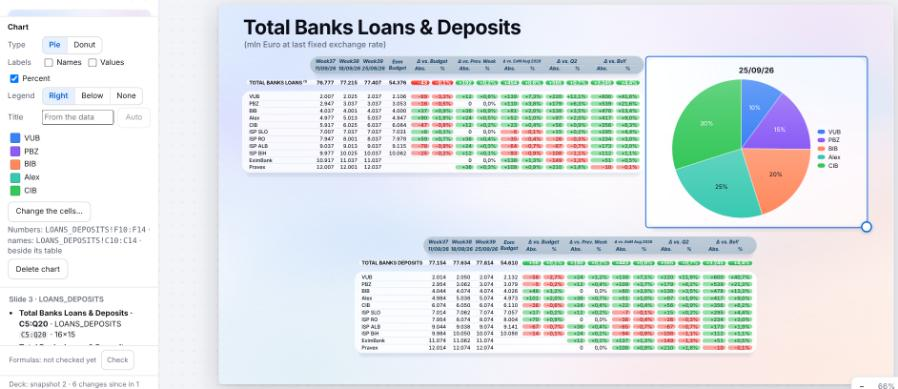
123456789Insert chart ▾ makes a pie from the selected cells – the last column's numbers, named by the first column, placed beside their table – or from cells you choose on any sheet the wizard lists, also one on no slide (Choose the cells…: drag across the numbers, then across their names; nothing to type). Hidden sheets stay hidden.
The chart follows the workbook: a reload, or a scenario's preview (part 7), draws it with the new numbers.
Click a chart to select it (a click on a slice selects that slice), drag it anywhere (it snaps; hold Alt for no snapping), drag its corner to resize it, Del removes it – one undo step each. Each design draws it in its own look: Glass in a glass card with the theme's colours, Excel with Office's chart colours, Refined on a white card, Navy and Red with their own palettes. Labels sit inside a slice when they fit, else outside with a leader line.
The panel's Type: Pie, Donut, Column, Bar, Line, Area, Combo, Scatter, Waterfall (a pie becomes a chart of its own numbers, and can go back). Stack: Side by side, Stacked, 100 %; Gap and Overlap as in Excel.
{Sheet!C7}), + Line to the next, + Band to the next – they follow the data.Insert shape ▾ adds a rectangle, rounded rectangle, pill, circle, arrow or speech bubble, or one of 17 icons (arrows, check, warning, info, flag, star, bank, euro, percent, calendar, chart, target, bell, pin, bulb, lock). Double-click it (or Enter) to write its text.
Quote a cell… picks a cell on a sheet and adds it as {Sheet!C7}: the shape shows that cell as the
workbook formats it, and follows reloads and scenarios – {'Sheet name'!C7} for a name with spaces,
{[Peers.xlsx]Peer!F7} for a linked workbook.
With a shape selected, ribbon 2 sets its fill, border (colour, weight, dashed, dotted, none) and text (size, bold, colour, alignment). Without a fill of its own a shape takes the design's material: glass, a framed box, a card. Drag it by its body, size it by an edge; Del removes it.
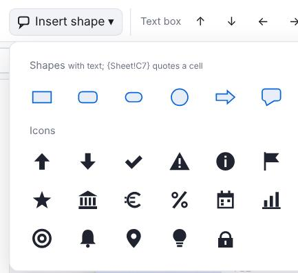
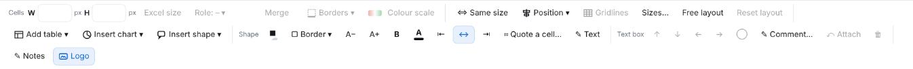
Insert shape ▾ › More icons…: about 6,200 icons (Tabler Icons), searched by name in English or Italian – "banca", "obiettivo", "freccia su", "stretta di mano" –, Outline or Filled, by category or Recent, in the colour, size and line chosen there (no internet needed). A selected icon has Change icon…, its size and line width. An icon this version does not have shows an info icon (i) and an Issues line.
Insert line ▾: line, arrow, double arrow, elbow, curve, bracket, range marker, limiter, divider,
callout line. Drag the line to move it, its round handles to move its ends (Shift: straight, 45° or upright), the middle handle for an
elbow's bend or a curve. Hold Ctrl while dragging an end to attach it to a table, text box, shape or icon: it follows that object, in
every design; Detach frees both ends. The ribbon sets the kind (Straight, Elbow, Curve, Bracket,
Range marker), colour, weight and style, each end (None, Open arrow, Arrow, Stealth arrow, Dot,
Diamond, Tick (limiter)) and a label, which can quote {Sheet!C7}. When an attached object is deleted the end
stays: "Line n: its end lost its object".
Free layout (ribbon 2) switches the current slide, in the current design, to a layout where every table, text box, chart and shape stays where you put it. Nothing moves when you switch it on, and from then on nothing re-flows, shrinks or follows a table.
Snapping (4.8) – for every object in every layout: moving or sizing a table (free layout), text box, chart, shape, icon or line lines it up with the slide's edges, centre lines and margins, the other objects' edges and centres, the tables' column and row borders and other lines' ends, each shown in pink; it offers equal gaps (marked in px) and, when resizing, another object's width or height. Hold Alt for none. The guides are on screen only; an object stays exactly where it is dropped, in the PDF and PowerPoint too.
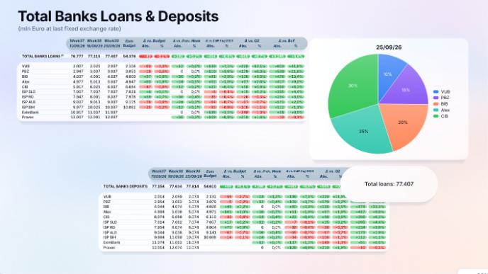
Total loans: {LOANS_DEPOSITS!F8}, a quoted cell.Several people edit the same deck at the same time, each on their own PC.
with their name in the status bar: "Updated by bob just now", then "… 3 min ago". If a colleague changes the slides themselves (the preset), your slides are rebuilt and you stay on your slide.
appears as soon as your change is on the shared folder – usually a fraction of a second. Before that: "Unsaved changes…", "Saving…". If the folder does not answer: "⚠ Not saved yet – retrying"; the change is kept and sent again after 2, 4, 8, 16 and 32 seconds. Ctrl+S saves at once. Closing the window with unsaved changes asks first.
The round initials next to the version list show who else has the workbook open (up to three initials, then "anna is also here" or "3 others here"; "(another window)" when it is you in a second window).
Changes are merged field by field: if you set a column width and a colleague the colour of another cell, both stay.
The later change in the deck's own order wins, on every PC alike: everybody ends with the same deck.
The slide is not redrawn while you write in a cell or box, and settings fields keep what you are typing; the newest slide waits until you finish.
Undo touches only your own changes, and only the fields you changed, so a colleague's work survives.
When somebody saves the workbook again in Excel, a banner offers to reload it:
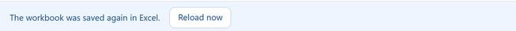
If a deck's file on the share is ever damaged, the deck can still be read but not changed until the maintainer looks at it: a change is refused with "⚠ This deck is read-only", and the health line ends in "· read-only".
When a newer version that changed the saved formats was installed while you worked, the status bar asks you to reload the page (F5); until then nothing more is saved. The first chart, shape, free layout, look, cell gridline or border or hidden slide of a deck costs once about 25 seconds of "Saving…" (part 8, the 4.6 mark). A 4.0 or 4.1 window shows a Navy or Red deck in Glass and keeps its settings.
Design, colours, page numbers, footer and logo belong to the deck and are shared. The defaults for new decks are re-read about every 30 s.
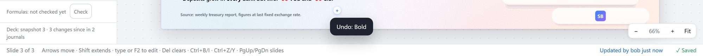
Slide Builder writes PDFs, PowerPoint files and pictures itself, in the background, from the same drawing you see on screen.
Export PDF exports the whole deck in the PDF mode you chose last (at first: text & tables), with a spinner while it works. The ▾ beside it opens the menu:
| Menu item | What you get |
|---|---|
| PDF · text & tables | one page per slide, real text and lines, sharp at any zoom – the default |
| PDF · as pictures | each slide as a 192 dpi picture |
| PDF · current slide only | the slide on screen |
| PowerPoint · all slides / current slide | a .pptx: editable text, real tables and charts (below) |
| PDF + PowerPoint · all slides / current slide | both files at once |
| Copy current slide · PNG · current slide / every slide | 4800 × 2700 pictures: on the clipboard, to paste anywhere, or as files |
| Versions: PDF · PowerPoint · PDF + PowerPoint, then every version or every version × Liquid Glass + Excel / all three designs / all five designs | one file per version (in this design) or per version and design; a toast counts them ("Saved N files") |
| Run for each value… | one file per value of an input cell (part 7) |
| Report a problem with this export… | a short report in export\feedback\ for the maintainer |
Slides hidden in the design (part 3) are left out, and page numbers and the index count only the slides shown; the current slide items export the slide on screen even when it is hidden.
Files are saved in the export\ folder: <workbook> - slides.pdf (and .pptx); one slide:
<workbook> - <slide>.pdf; pictures: <workbook> - <slide>.png; versions:
<workbook> - <version> - <design>.pdf or .pptx; a run: <value> - <design>.pdf
(<value> - <version> - <design>.pdf with versions). A PDF of pictures adds " (images)". If a file of that name is
open in a viewer, the new one is saved as "… (2)". A toast names the file, with Open and
Show folder:
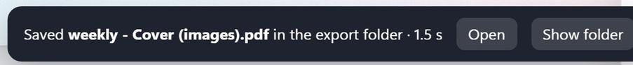
Titles, subtitles, footers and page numbers are the layout's placeholders; every table is a real PowerPoint table (its cells' fills, borders and texts); every chart (column, bar, line, area, scatter, combo on two axes, waterfall, pie, donut) is a PowerPoint chart with its data (Edit Data works; its numbers use the separators of the PC that opens it, the slide's are the workbook's); a chart's arrows and lines are PowerPoint lines; icons are editable shapes and lines are line shapes with PowerPoint's arrowheads (not attached there); shapes are PowerPoint shapes holding their text; the workbook's pictures and the logo are pictures; everything else – Glass's frosted cards, capsules and shadows, the consulting designs' bars and rules – is editable shapes. Each file has a slide master and one layout per kind of slide (cover, contents, content), made from the deck, with the design's colours and fonts. No connector shapes, no links outside the file.
Positions and sizes are the slide's, so the file looks like the PDF; PowerPoint draws a chart's labels and pie size and its shadows its own way. Fonts are named, not embedded; the toast names a font of the deck's library that PowerPoint may replace.
Unsaved changes are saved first, so the export always shows them. The work runs in the background; the window keeps responding. On the 20-slide test deck: a Glass PDF in about 1.4 s and 1.3 MB, an Excel PDF in about 0.4 s and 0.3 MB; a Glass PowerPoint file in about 0.6 s and 0.5 MB, an Excel one in about 0.35 s and 0.14 MB. A PDF of pictures is much bigger: 11.6 MB in Excel and 69 MB in Glass for the same deck.
Each page is exactly one 16:9 slide. The fonts used in a PDF are embedded, so it looks the same on any PC; a font nobody has is replaced by a default one, and the toast names it. Opened from disk without the helper (part 9), the files are downloads instead.
Tables from several workbooks, the formulas recomputed by Slide Builder, and one file for each value of an input cell.
A deck can draw tables from more than one workbook of the folder. In wizard step 1 press + Add a linked workbook… and pick a file. Its sheets join the list with the file's name beside them; tick them and pick their tables like any other.
Such a sheet is named [Peers.xlsx]Peer on the slides and in the Issues panel: the file in square brackets, then the sheet.
The deck remembers its linked files and opens them with it, read-only like any workbook.
If a linked file is missing when the deck opens, everything else opens and the Issues panel says: "Linked workbook "Peers.xlsx" not found in the folder: its tables are missing until it is back (the deck keeps them)".
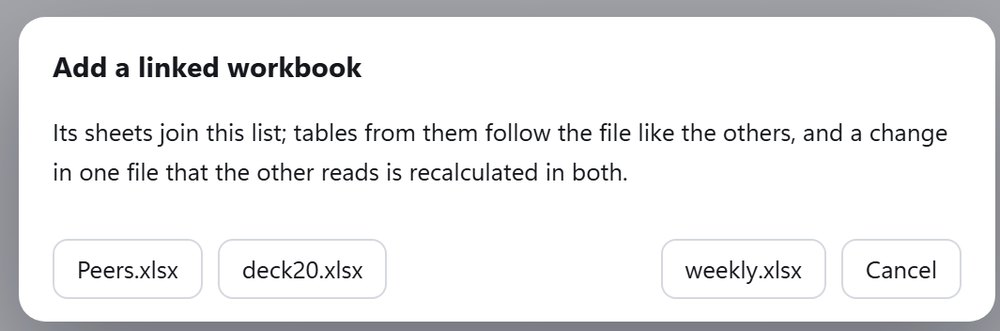
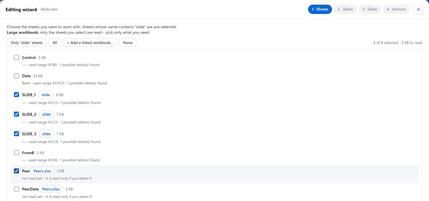
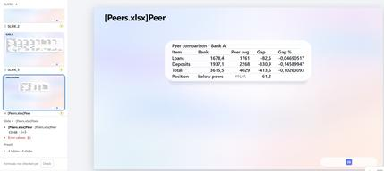
[Peers.xlsx]Peer.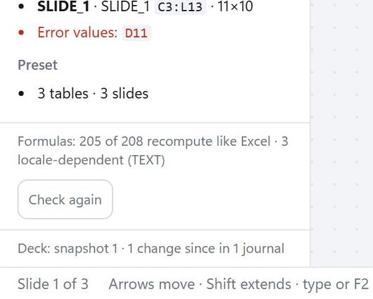
At the bottom of the side panel, Check recomputes every formula of the workbook – and of the folder's workbooks it links to – and compares each result with the value Excel saved in the file. The check changes nothing. The line then reads, for example, "Formulas: 205 of 208 recompute like Excel · 3 locale-dependent (TEXT)" ("not checked yet" before, "checking…" during); Check again repeats it.
| The line says | Meaning, and what to do |
|---|---|
| recompute like Excel | the result equals Excel's own. Nothing to do. |
| volatile (TODAY, NOW, RAND) | the value changes every time by nature. Nothing to do. |
| locale-dependent (TEXT) | a TEXT format code written by an Excel in another language. Nothing to do. |
| read a hidden sheet · read a workbook not in the folder · could not be read | the check could not judge these cells; put a missing linked file in the folder |
| with TEXT in Italian, formatted by Slide Builder | TEXT codes of an Italian Excel, formatted as it does. Nothing to do. |
| different from Excel | shown as a warning: tell the maintainer which workbook it was |
Outside a scenario the slides show the values Excel saved. The formula engine starts only when needed, so opening a deck is as fast as before.
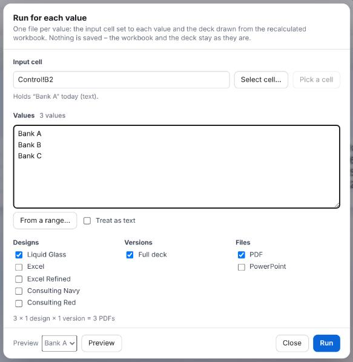
Export ▾ › Run for each value… sets an input cell (e.g. the bank of a control sheet) to each value of a list and saves one file per value, design and version; the workbook is recalculated for each value and nothing is saved.
Control!B2), Select cell…, or Pick a cell (the one
selected on the slide). Values: typed, pasted or From a range…; Treat as text; values that show alike
get " (2)". Then designs, versions, files (PDF, PowerPoint).Preview one value beside Preview: a banner names it, and slides, charts, formula bar and side panel show its values until Clear. Edits meanwhile are ordinary edits (one of a cell the scenario changed shows after Clear, and Slide Builder says so); an ordinary export uses the workbook's own values.
Italian Excel and names. TESTO(…;"mmmm aaaa") and the like are formatted as Italian Excel does, so titles follow a
scenario. Named ranges are recalculated; the Formulas line lists any it cannot ("names not recalculated: …"). Measured: one value in
about half a second from the click, 20 values in about 3.2 s.
For the owner and the maintainer: what runs where, what is saved where, and why nothing needs a lock.
The shared folder holds the workbooks, the exports, the program and all saved state. It is the only connection between PCs: the helpers never talk to each other.
The helper is a small Python program that runs on each PC while Slide Builder is open – the console window. It hands the
workbook's bytes to the page, appends changes to journal files, keeps snapshots, saves exports, fonts and logos, and converts old
.xls files through Excel. It understands none of the slides, and it answers only on the PC itself (127.0.0.1).
The page in Edge does all the work: it reads the workbook, lays out the tables, draws the slides and writes the PDF and PowerPoint files. It is one file of the program; nothing is installed on the PC beyond Python.
The worker is a background part of the page that owns the open workbook and the deck, so the window never freezes while a big workbook is read. Up to three export workers write PDFs and pictures side by side, and stop after a minute without work.
No lock. Each person (each open window) writes only to their own journal file, so nobody ever waits for anybody. The order of the changes comes from a counter inside each record, not from who reached the share first, so every PC builds exactly the same deck. A record that could not be sent is kept and sent again; the same record is never counted twice.
The health line. "Deck: snapshot 6 · 3 changes since in 2 journals" means: the deck's sixth snapshot, plus 3 changes in 2 journals that are not in a snapshot yet. A snapshot is written when more than 2 000 changes piled up, when the oldest is a day old, or when the last person alone on the deck has been quiet for 5 seconds; the previous 30 snapshots stay as backups.
Read-only, never guessed. A last line that is still being written is simply read again later. But if a complete line is found damaged, the helper writes an incident file in the deck's folder and the deck becomes read-only for everybody until the maintainer looks at it. Nothing is guessed and nothing is lost: an unreadable file is never treated as empty.
Measured. With 20 simulated people on one deck and a slow share (40 ms per file operation), a change was saved in about 0.1 s and visible to the others in 1.4 s (median), 2.2 s at worst for 95 % of changes. No change was lost in any test.
The worker describes each slide once as a display list: the rectangles, lines, texts and pictures it is made of, in slide coordinates. The same list draws the slide on screen, the thumbnails, the PNG pictures, the PDF and the PowerPoint file – so what you see is what you export. Only the tables that changed are drawn again after an edit; a key press reaches the screen in 25–42 ms (for 95 % of key presses).
Fonts. Text is measured from the font files themselves, not by the browser, so line breaks and text-box fitting are the same
on screen and in the PDF, and on every PC that has the same fonts. Windows fonts can differ by version between PCs; the side panel
names such a font ("Calibri on this PC is another version than on PC-B"), whose slides may wrap a little differently there. Once the
fonts' licence owner agrees (slide_builder.py --allow-font-copy "<who, when>"), the helper copies the Windows fonts a deck
uses into the shared library, and every PC lays it out with the same files.
The formulas are read from the workbook file itself and recomputed inside the page by an embedded engine, IronCalc (open source, MIT / Apache-2.0), started on first use; Excel is not needed. It serves the self-check of the Formulas line and the scenarios. Otherwise the slides show Excel's saved values.
A deck that holds objects older versions do not know carries a mark file, incident-format-5.json, in its folder
(backend\data\v4\decks\<deck>\). It is written once, before the first such object is saved – the "Saving…" of about 25
seconds (a 23-second wait, then a new snapshot), which gives every open window of an older version time to notice. A version before 4.6 then opens the deck read-only instead of
dropping what it does not know, and says "a journal of this deck is damaged – tell the maintainer": that message means update. Never delete
the mark.
backend\data\.Update Slide Builder.bat downloads a release from GitHub, and the helper fetches a Google font being added or a font preview not yet in the shared cache (backend\data\fonts\cache\, at most 200 MB) – from Google's font collection on GitHub, else jsDelivr, Google Fonts last. A proxy goes in this PC's %LOCALAPPDATA%\SlideBuilder\proxy.txt or the shared backend\data\proxy.txt. The page itself asks Google for a font only when the helper cannot reach it, or when opened from disk.The Issues panel, the common messages, and – for the maintainer – logs, backups, updates and roll-backs.
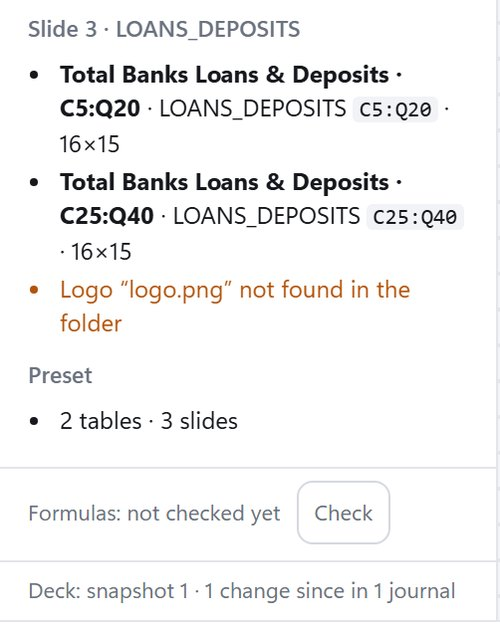
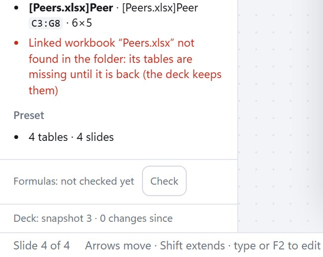
| The line says | Meaning, and what to do |
|---|---|
| Cover slide · … / Index slide · lists N content slide(s) · Custom table layout saved | for information: nothing to do |
| Preset: N tables · M slides · K tables not on any slide | the deck's setup; a table on no slide can be put back with Add table ▾ |
| Error values: D11 | the cell shows an Excel error (#N/A, #DIV/0!…): fix it in the workbook |
| Small text (≈8.6px at 100%) | the table is shrunk a lot: enlarge it or move it to its own slide |
| N tables of this slide could not be found | a sheet was renamed or deleted: open the wizard |
| No tables on this slide | add tables in wizard step 3 |
| Chart on … not reproduced | an Excel chart inside the sheet is not drawn: paste it as a picture inside the table area in Excel, or make one with Insert chart ▾ |
| Chart 1: source Summary!C5:C9 not found | its sheet was renamed or removed: Change the cells…; meanwhile a dashed placeholder, left out of exports |
| Chart 1: no numbers in Summary!C5:C9 | the chosen cells hold no numbers |
| Callout 1: Nowhere!B2 not found (shown as #REF) | the quoted cell's sheet is gone: quote the cell again |
| N objects of a newer Slide Builder … | this window runs an older version: close its black window, start Slide Builder again |
| Pictures that could not be read · conditional formats not reproduced | that element is left out |
| Line n: its end lost its object | its object was deleted: attach the end again (Ctrl) |
| N edited cells · M text edits paused | Excel's value changed under your text (new figures, rows inserted above): check and retype |
| Logo "logo.png" not found in the folder | choose the logo again in ⚙ Options |
| Linked workbook "…" not found in the folder | put the file back in the folder |
| … on this PC is another version than on … | a Windows font differs between PCs: slides may wrap a little differently there |
| Message | What to do |
|---|---|
| "… is protected (password or sensitivity label with encryption)" | remove the protection, or save an unprotected .xlsx copy |
"Converting … with Excel…" (an old .xls) | wait; this needs Excel on the PC. The original file stays unchanged |
| "Opened directly from disk: work is kept in this browser only and exports are downloaded" | an emergency mode without the helper: no folder list, no uploads, decks, preferences and Google fonts kept in this browser only. Start Start Slide Builder.bat |
| "Helper not running" / "Helper stopped" | the console window was closed: start Slide Builder again |
| "⚠ This deck is read-only" | call the maintainer |
| "a journal of this deck is damaged – tell the maintainer" in an older version, on a deck with 4.6 objects | that version is too old: close its black window and start Slide Builder again, which starts the new version |
| Adding a Google font fails ("failed to fetch", no network…) | the message says why and what to do; Upload font files always works |
The helper writes its log in its console window, with the time of each line; there is no log
file, so copy the lines from the window. An unexpected error shows its details there too. Users' export problem reports are in
export\feedback\. A damaged journal leaves incident-….json in backend\data\v4\decks\<deck>\;
repairing such a deck is a manual job.
⚙ Options › Administration › Saved setups… lists every workbook's setup (slides, tables, last change) with Delete…, and the deleted ones with Restore…: a deleted setup is kept as a backup on the shared folder. A setup open in a window is not deleted – the message says who has it open.
In backend\data\backups\: the last 30 snapshots of every deck (v4\<deck>\),
each file before a format upgrade (upgrades\), and the saved setups before each update (before-update-<time>\,
the last 5).
Run Update Slide Builder.bat: it installs the newest release
beside the current one in app\<version>\, runs its self-test, and only then makes it current (it needs Python 3.8 or newer); everybody then restarts
Slide Builder and reloads the page. Decks, settings, workbooks and exports are never changed by an update; with nothing newer it says so and changes
nothing, and a used-up GitHub limit is one sentence with the time to try again. An update never replaces
Update Slide Builder.bat on a share that has one, and the 4.0.0 updater cannot reach later releases: both by hand
(docs/next/release-checklist.md §6). --use <version> goes back to an installed version; below 4.6 it first names the decks with 4.6 objects (they open
read-only there) – never delete their incident-format-5.json. The other options (--release, --zip,
--yes) and the update-day steps: README §2.3–§2.4.
While Start Slide Builder (v3).bat exists it starts the
newest 3.x on the same data. A deck moves to 4.x on its first open there; its 3.x file is backed up and frozen. Giving a deck back:
⚙ Options › Administration › Prepare rollback, everybody closes it, then --rollback "<workbook>"
(docs/next/cutover.md §3). A v2 backend\slide_builder_settings.txt is imported once by the first helper and
renamed ….v2-backup.txt.
⚙ Options › About › Licences… shows the licences of the third-party software in
Slide Builder (React, zustand, fflate, IronCalc, harfbuzzjs / HarfBuzz); the same text is THIRD-PARTY-NOTICES.txt in app\<version>\.
backend\data\{Sheet!C7} (a callout)x in the cells just outside two opposite corners of a table, so Slide Builder finds it[File.xlsx]Sheetincident-format-5.json in a deck's folder: versions before 4.6 open that deck read-only